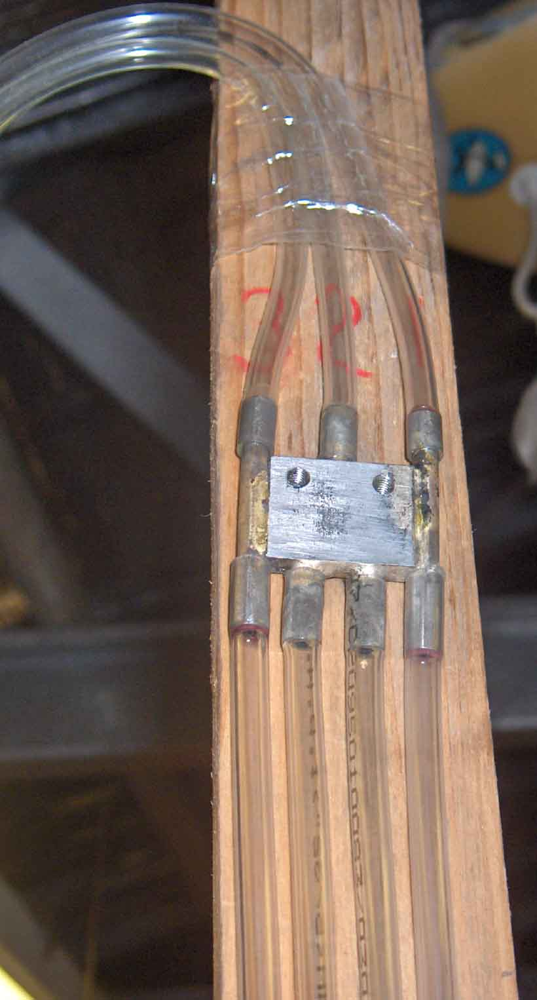
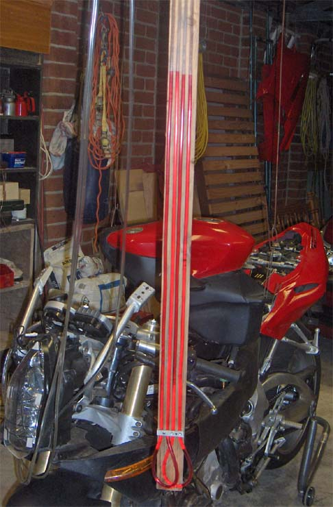
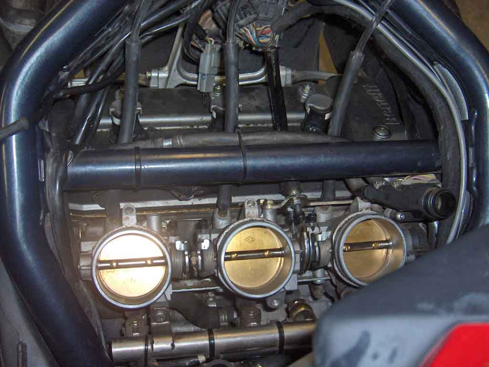
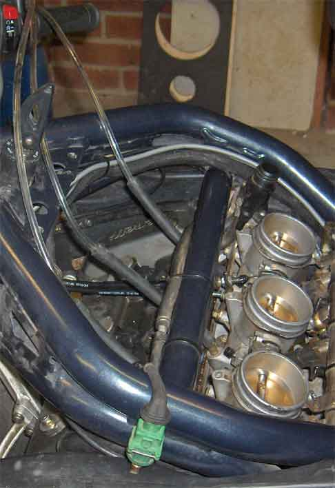

The ECU will control the idle best if the throttles are in sync. This requires that each butterfly
can close fully, without leaking. Any leaks compromise the Idle Air Control Valve (IACV) a.k.a. stepper.
If the leaks are too big, the ECU can not reduce the idle speed to the set point (normally 1200 rpm)
using the stepper.
Acknowledgements
The idea for the following vacuum synchronisation instrument came from Hugh Kenny, who wrote about it
in March 2002. He got the idea from Tom Rowe.
You can see the original article
at airheads.org. and probably a dozen other sites. It was conceived to tune a boxer twin, so only
used one tube. Basically, the tube is half filled with a liquid, bent into a 'U', where the
liquid sits, and each end is connected to a vacuum port. The levels will be the same height, if the
vacuum pressures are equal, but if they are not, the difference in pressure will raise the level on one
side, and drop it on the other.
That works fine for a twin, but for a triple, you need 2 tubes. One to measure the differential between
2 & 1, and the other to measure that between 2 & 3. Cylinder 2 has a direct connection to the throttle,
& 1 and 2 are adjusted in relation to it.
How to Build a Differential Manometer for the Tre


3 into 4 Manifold
Differential Manometer
You can see the finished device above. 3 pvc tubes bring vacuum from each throat, to a manifold, which
splits #2 into 2, but just transfers #1 to 1 & #3 to 3. Another tube from 1 then runs down a wooden
backing plate, through a retainer, then back to 2. This is repeated for 2 to 3.
The backing plate is about 1.6 m long & 45 mm wide.
Each down tube is 2.5 m long with a bore of 4 mm. The actual bore size is not important, but the folded
length should be a meter, or more.
The vacuum ports on the throttle bodies are 8 mm OD, belled to 9 mm at the tips. I used some rubber
hose that fit snugly over the pvc tube, to connect to these ports.
The 3 tubes that run back to the throttle bodies are about 3 m long, but again, it depends on where
you can hang the manometer, and how far you are be from your bike.
I filled the downtubes with automatic transission fluid (ATF), to about half way. Purging the air bubbles
was done by repeatedly pressurising one side of a downtube. The bubbles will rise faster than the oil
level. I did end up with a small bubble in one tube, that settled at the bottom. I assume that it's
surface tension was too high to allow it to rise properly. Which probably means that a larger bore would
have helped. But it made no difference to the way the manometer worked, so I left it there.
The downtubes were held in place at the bottom by feeding them through an aluminium block, with holes
barely large enough to take them.
What I haven't shown are the tee pieces at the end of each 3000 mm tube. Originally I had placed a bleed hole
in each tube and completely bypassed the stepper, but for a very long time now, I just tap each leg of
the manometer into the line with the corresponding stepper vacuum tube. That way the ECU can still control the
idle speed. Once set though, it doesn't move.
As an aside, ATF works well because it's red & easy to see. Also, if the vacuum pressures are way off,
it may be sucked into the engine, where it will be burnt. A 4 mm tube, if filled to 1250 mm, will hold
about 15 ml of oil. Or just about nothing.
But it may happen, so you'll have to make sure that the Tre isn't WAY out of sync when you start.
The Procedure, using the Differential Manometer
(The following is a result of discussions with colintornado and others, and experience. There may be better ways
to synchronise the throttles, but this one works)


Top view of connection to throttle bodies
Side view of connection to throttle bodies
Remove all of your panels and the airbox.
Verify that the inlet air temp. sensor is connected to the loom.
Bypass the tip over switch, by connecting pins 2 & 3 on the associated connector.
Support the fuel tank just above the frame, so that you can access the throttle linkages, and the fuel
hose isn't unduly strained.
Connect the fuel line & fuel pump harness.
Hook up your analyser (Axione or TuneECU) so that you can read the stepper position.
Cut 5 mm strips of thermal printer paper (60 μm) or similar. The plasticised glue protector from self adhesive
envelopes works well. It is only 40 μm yet sturdy.
Insert a strip between each butterfly and body in turn at 45, 90, 135, 225, 270 & 315. The butterfly should grip
the strip at each position if they are set correctly.
If any slip, open all the stops so that the butterflies act as the stops, and re-test.
If it still slips, the butterfly could be held open by another butterfly. To rectify, adjust the spindle so that the
open butterfly closes. Check them all again.
If you end up with one gap of the 6 positions, the butterfly may need coaxial alignment with it's throttle. To do
this, loosen the two retaining screws and move the butterfly on it's spindle to your best guess at alignment. Tighten
the screws, re-test and repeat as necessary.
When all are grabbing the same, screw the centre stop back to closed, using the strip as a feeler. If you still have
stops 1 & 3, reset these as well. At this stage the sync will be close.
If you have moved #1 in relation to #2, reset the TPS.
Time now to sync the vacuums pulled by each cylinder at idle, so warm up the engine to running temperature, then turn
it off.
Remove the 3 hoses from the stepper to the base of the throttle bodies.
Connect Manometer hose #1 to #1, #2 to #2 and #3 to #3, then connect the corresponding stepper hoses to
the other end of the Tee's
Screw all of the bypass screws fully in.
Start the engine again
Adjust the bypass screws until the manometer levels are even.
Remember, opening a bypass screw decreases the vacuum and lowers the level in the tube connected to that throttle.
One screw should remain closed.
With the idle speed setpoint of 1200, the stepper should be between 30 to 40 when finished. Lower than 30 and the engine
will have flat spots and be prone to stalling. If high, reduce the carburation percent, if low, increase it. If you have an
oxygen sensor, aim for an air fuel ratio of between 13.5 & 12.5, the lower values will reduce stalling.
When near 30 - 40, use the analyser to adjust the "Manual Adaptation of The Stepper" up or down until the stepper
sits between 30 and 40 at idle.
All done. Switch off, remove the manometer and analyser, and put her back together.
At this stage you could use TuneECU to download the map and raise the idle speed to 1250, then upload the new map.
Raising the idle speed will reduce stalling as the engine falls to idle.
The Benefits of Synchronising the Throttle Bodies?
Nell had been getting about 130-140 km in city riding, before the fuel light came on. When I first
checked the sync, the manometer levels were about 300 mm different on the worst pair. After synchronising to
within 10 mm, the engine ran noticeably smoother, and the fuel light didn't come on until 155 km.